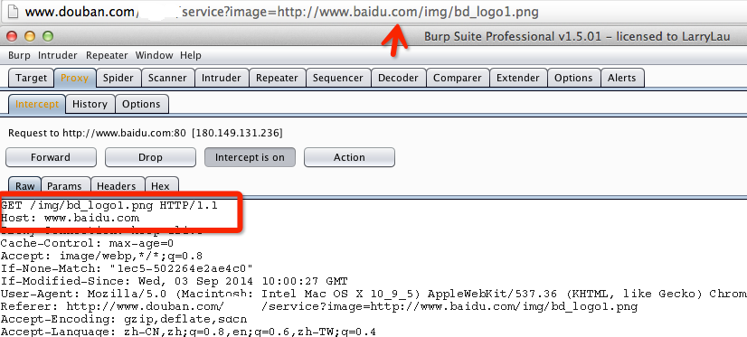

SSRF概述
SSRF(Server-Side Request Forgery:服务器端请求伪造) 是一种由攻击者构造形成由服务端发起请求的一个安全漏洞。一般情况下，SSRF攻击的目标是从外网无法访问的内部系统。
SSRF形成的原因大都是由于服务端提供了从其他服务器应用获取数据的功能且没有对目标地址做过滤与限制。比如从指定URL地址获取网页文本内容，加载指定地址的图片，下载等等。
#主要实现的攻击：
1.可以对外网、服务器所在内网、本地进行端口扫描，获取一些服务的banner信息;
2.攻击运行在内网或本地的应用程序（比如溢出）;
3.对内网web应用进行指纹识别，通过访问默认文件实现;
4.攻击内外网的web应用，主要是使用get参数就可以实现的攻击（比如struts2，sqli等）;
5.利用file协议读取本地文件等。
关键字搜查
share
wap
url
link
src
source
target
u
3g
display
sourceURl
imageURL
domain
#漏洞验证
排除法一：
你可以直接右键图片，在新窗口打开图片，如果是浏览器上URL地址栏是http://www.baidu.com/img/bd_logo1.png，说明不存在SSRF漏洞。
排除法二：
你可以使用burpsuite等抓包工具来判断是否不是SSRF，首先SSRF是由服务端发起的请求，因此在加载图片的时候，是由服务端发起的，所以在我们本地浏览器的请求中就不应该存在图片的请求，在此例子中，如果刷新当前页面，有如下请求，则可判断不是SSRF。
